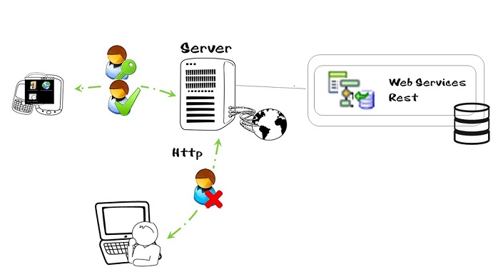
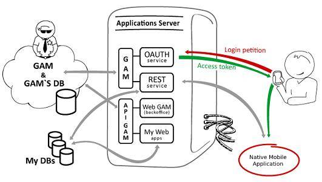

The architecture of a Native Mobile applications consists basically of a "client application" which is installed on the device and a "server application" (implemented using REST Web Services which solve the business logic of the application). See Secure Native Mobile applications architecture for details.
The architecture, as it is, allows any HTTP client to access the REST services hosted in the application server.
As a consequence, in many cases (depending on the security needed) it's important to consider that REST Web Services should only be accessible from the devices, not from other HTTP clients (at least for POST, PUT, DELETE actions).
GAM solves this security problem, it implements a security mechanism based on OAuth which allows only authenticated and authorized users to access the resources exposed as REST services in the application server.

The following explains what happens after activating integrated security to the application (Enable Integrated Security Property).
After the user performs the login on the application, the device sends a token to the OAuth server stored in the same server where GAM is located.
The user name and password entered by the user are validated to then return an Access Token (a value that is generated for each entry) that can either remain unchanged while the user is connected or be reset regularly depending on the value of the Oauth token expire property (available as an option of the GAM Backend, so the administrator user may set this property according to the GAM Security Policies).

Following its admission, the Dashboard (or entry point of the application) is opened, and the AccessToken is validated for every REST Web Service request. This occurs permanently throughout the whole session.
Secure Native Mobile applications architecture
Online Native Mobile applications architecture
| Backlinks | |
| GAM - Native Mobile Authentication | Toc:GeneXus Access Manager (GAM) |